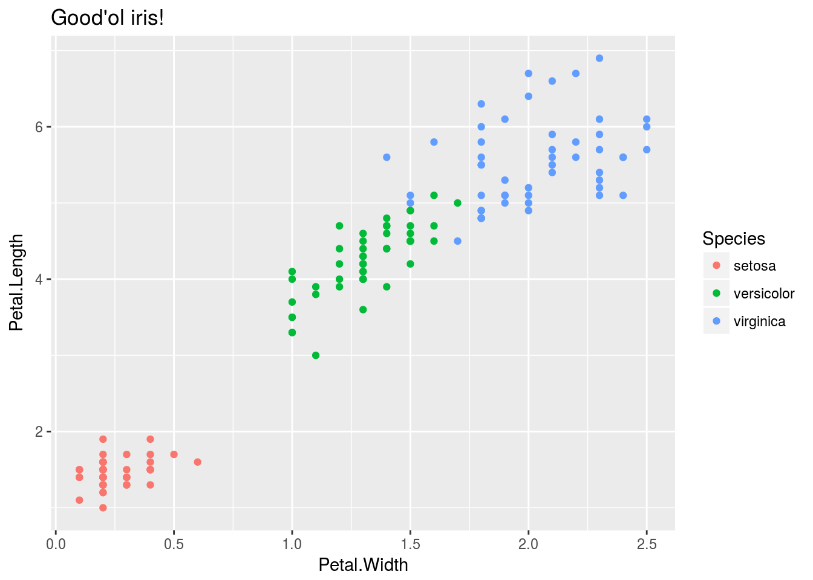
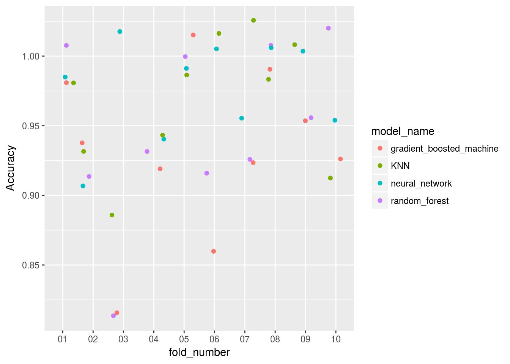
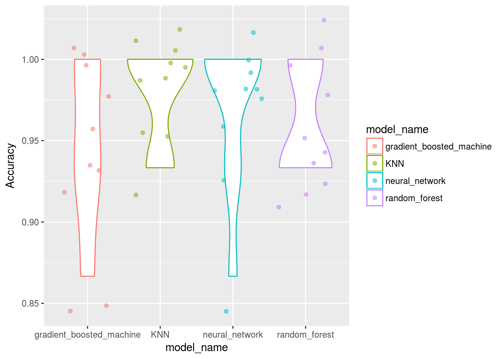

Benchmarking machine learning models in parallel
Overview
Having just started playing with deeplearning models in R, I wanted to visually compare them to other more traditional ML workflows. Of course, deeplearning is generally used where other models fail, but with no need for feature selection and rapidly increasing power and ease of use they may just evolve into a general learning paradigm.

However, with tabular data and packages like caret the machine learning methods have become so streamlined that minimal user input is required at all.
How will my models score if I run all of them with minimal input?
Setting up the data
I will use a classical example of classification model to compare basic deeplearning MLP layouts to basic ML methods.
The good’ol iris dataset!
iris %>%
ggplot()+
geom_point(aes(x=Petal.Width, y= Petal.Length, col = Species))+
ggtitle("Good'ol iris!")
Lets load and split the Iris data into our test and train splits:
Model_benchmarking_table <-
iris %>% mutate_if(is.factor,as.character) %>% modelr::crossv_kfold(k = 10, id = "fold_number") %>%
select(fold_number,everything()) %>%
dplyr::rename(training_data = train)Genrally we do not want to split the data like this in advance since our different models may require different pre-processing on the data. In some cases pre-processing is preffered before splitting the data into test and train sets.
However splitting the data like this keeps all our folds in one tibble and allows us to expand on it like a database. We will use this database later to visualize the performance of the different methods on a more granular level.
Model_benchmarking_table## # A tibble: 10 x 3
## fold_number training_data test
## <chr> <list> <list>
## 1 01 <S3: resample> <S3: resample>
## 2 02 <S3: resample> <S3: resample>
## 3 03 <S3: resample> <S3: resample>
## 4 04 <S3: resample> <S3: resample>
## 5 05 <S3: resample> <S3: resample>
## 6 06 <S3: resample> <S3: resample>
## 7 07 <S3: resample> <S3: resample>
## 8 08 <S3: resample> <S3: resample>
## 9 09 <S3: resample> <S3: resample>
## 10 10 <S3: resample> <S3: resample>Training functions
In order to run all our models in parallel and on each fold we will need to establish pre-defined functions for them that we can call using only data input. This way we can leverage map reduce and tibbles while keeping our workflow clean.
First we will start off by building our basic ML model functions. This is made quite easy with the caret package.
The caret package workflow in this case consists of the following building blocks:
- pre-process - train-control - train - validate {ROC,Confusion_matrix etc.}
ML models
For our caret models we can pre-define the formula object:
formula_caret <- Species~.
cl = makeCluster(4)K-NN
caret_knn <- function(df,formula_caret = Species ~ .) {
list(
train(formula_caret
,data = df
,method = "knn"
)
)
}Random Forest
Useful ensamble method.
caret_rf <- function(df,formula_caret = Species ~ .) {
list(
train(formula_caret
,df
,method = "rf"
,prox=TRUE
)
)
}GBM
Gradient boosted machine, popular with tabular data predictions.
caret_gbm <- function(df,formula_caret = Species ~ .) {
list(
train(formula_caret
,data = df
,method = "gbm"
)
)
}Caret nnet
caret_nnet <- function(df,formula_caret = Species ~ .) {
list(
train(formula_caret
,df
,method = "nnet"
,prox=TRUE
)
)
}Train caret models
set.seed(8020)
doParallel::registerDoParallel(cl)
Model_benchmarking_table <-
Model_benchmarking_table %>%
mutate(
random_forest = training_data %>% map(~caret_rf(df = data.frame(.x)))
,gradient_boosted_machine = training_data %>% map(~caret_gbm(df = data.frame(.x)))
,neural_network = training_data %>% map(~caret_nnet(df = data.frame(.x)))
,KNN = training_data %>% map(~caret_knn(df = data.frame(.x)))
)
stopCluster(cl)If we train the models like this we can store all our results in a tibble:
Model_benchmarking_table[,4:7]## # A tibble: 10 x 4
## random_forest gradient_boosted_machine neural_network KNN
## <list> <list> <list> <list>
## 1 <list [1]> <list [1]> <list [1]> <list [1]>
## 2 <list [1]> <list [1]> <list [1]> <list [1]>
## 3 <list [1]> <list [1]> <list [1]> <list [1]>
## 4 <list [1]> <list [1]> <list [1]> <list [1]>
## 5 <list [1]> <list [1]> <list [1]> <list [1]>
## 6 <list [1]> <list [1]> <list [1]> <list [1]>
## 7 <list [1]> <list [1]> <list [1]> <list [1]>
## 8 <list [1]> <list [1]> <list [1]> <list [1]>
## 9 <list [1]> <list [1]> <list [1]> <list [1]>
## 10 <list [1]> <list [1]> <list [1]> <list [1]>This allows us wrangle performance metric for each crossvalidation fold or bootstrap sample so that we can visualize them holistically:
Measure performance
Now that we have trained the models on the training data let’s make this table long
Model_benchmarking_table <-
Model_benchmarking_table %>%
gather(key = "model_name",value = "model_object",4:7)
Model_benchmarking_table## # A tibble: 40 x 5
## fold_number training_data test model_name model_object
## <chr> <list> <list> <chr> <list>
## 1 01 <S3: resample> <S3: resample> random_forest <list [1]>
## 2 02 <S3: resample> <S3: resample> random_forest <list [1]>
## 3 03 <S3: resample> <S3: resample> random_forest <list [1]>
## 4 04 <S3: resample> <S3: resample> random_forest <list [1]>
## 5 05 <S3: resample> <S3: resample> random_forest <list [1]>
## 6 06 <S3: resample> <S3: resample> random_forest <list [1]>
## 7 07 <S3: resample> <S3: resample> random_forest <list [1]>
## 8 08 <S3: resample> <S3: resample> random_forest <list [1]>
## 9 09 <S3: resample> <S3: resample> random_forest <list [1]>
## 10 10 <S3: resample> <S3: resample> random_forest <list [1]>
## # ... with 30 more rowsNow we can measure accuracy by getting our predictions vs actuals and looking at the confusion matrix
Model_benchmarking_table <-
Model_benchmarking_table %>%
mutate(actuals = test %>% map(~.x %>% data.frame %>% select(Species) %>% flatten_chr)) %>%
mutate(predicted = map2(test,model_object, ~predict(object = .y,newdata = as.data.frame(.x)) %>% map(as.character) %>% flatten_chr)) %>%
mutate(confusion_matrix = map2(actuals,predicted,~table(.x,.y))) %>%
mutate(Accuracy = confusion_matrix %>% map_dbl(~ diag(.x) %>% sum/sum(.x)))
Model_benchmarking_table[,4:9]## # A tibble: 40 x 6
## model_name model_object actuals predicted confusion_matrix Accuracy
## <chr> <list> <list> <list> <list> <dbl>
## 1 random_forest <list [1]> <chr [1… <chr [15… <S3: table> 1.00
## 2 random_forest <list [1]> <chr [1… <chr [15… <S3: table> 0.933
## 3 random_forest <list [1]> <chr [1… <chr [15… <S3: table> 0.800
## 4 random_forest <list [1]> <chr [1… <chr [15… <S3: table> 0.933
## 5 random_forest <list [1]> <chr [1… <chr [15… <S3: table> 1.00
## 6 random_forest <list [1]> <chr [1… <chr [15… <S3: table> 0.933
## 7 random_forest <list [1]> <chr [1… <chr [15… <S3: table> 0.933
## 8 random_forest <list [1]> <chr [1… <chr [15… <S3: table> 1.00
## 9 random_forest <list [1]> <chr [1… <chr [15… <S3: table> 0.933
## 10 random_forest <list [1]> <chr [1… <chr [15… <S3: table> 1.00
## # ... with 30 more rowsWe have all the info in our table now
Mean accuracy:
Model_benchmarking_table %>%
group_by(model_name) %>%
summarise(mean_accuracy = mean(Accuracy))## # A tibble: 4 x 2
## model_name mean_accuracy
## <chr> <dbl>
## 1 gradient_boosted_machine 0.933
## 2 KNN 0.967
## 3 neural_network 0.973
## 4 random_forest 0.947Plot performance
Model_benchmarking_table %>%
ggplot()+
geom_jitter(aes(x=fold_number,y=Accuracy,col = model_name))
Model_benchmarking_table %>%
ggplot()+
geom_violin(aes(x=model_name,y=Accuracy,col = model_name))+
# geom_point(aes(x=model_name,y=Accuracy,col = model_name))
geom_jitter(aes(x=model_name,y=Accuracy,col = model_name), alpha = 0.5)
# geom_boxplot(aes(x=model_name,y=Accuracy,col = model_name))Deeplearning model with keras
Now that we have a workflow to test various machine learning models on a dataset using a formula, let’s build a basic deep learning model using a basic MLP layout and try to match those benchmarks.
If the neural network via caret is any indication this model should perform very well…
One hot encoding and pre-processing
Its classification and keras has the to_categorical function to help us turn that response variable into the deeplearning version of a sparse matrix so we can predict these classes.
Remember to encode the classes as integers, not characters!
iris_data <-
iris %>%
mutate(Species = as.numeric(Species) -1) %>%
as.matrix()
dimnames(iris_data) <- NULL
iris_data_X <- normalize(iris_data[,1:4])
set.seed(123)
split <- sample.split(iris$Species,SplitRatio=0.7)
data_train_X <- iris_data_X[split,]
data_test_X <- iris_data_X[!split,]
data_train_Y <- iris_data[split,5] %>% to_categorical()
data_test_Y <- iris_data[!split,5] %>% to_categorical()Construct a basic MLP
To train any deeplearning model you need to construct layers of neurons, in this case no extra fluff!
model_keras <- keras_model_sequential()
model_keras %>%
layer_dense(units = 8, activation = 'relu', input_shape = c(4)) %>%
layer_dense(units = 5, activation = 'relu') %>%
layer_dense(units = 3, activation = 'softmax')
model_kerasFit deep learning model
The model itself runs from gpu so I have only printed the output here in this document.
Get predictions
Normally we would calculate the confusion matrices ourselves or with caret::confusionMatrix():
# Predict the classes for the test data
classes <- model_keras %>% predict_classes(data_test_X)
# Confusion matrix
cm <- table(iris_data[!split,5], classes)One measure of accuracy would’ve been:
diag(cm) %>% sum/sum(cm)But indeed straight from keras and tensorboard:
history %>% plotIt seems to be reporting the accuracy on its test split as:
history$metrics$val_acc %>% last()0.952381
That seems to be in line with our average ratings across the auto-tuned ML libraries… Without needing feature selection. In a more complex dataset with hundreds of features (like pixels on frame of a video) it is obvious why these models perform so well.
Conclusion
Even for basic tabular data and classification (not a typical use case of deeplearning) we can get very good scores compared to out of box alternatives from some of the leading ML packages in R.
Deeplearning is definitely a top contender!